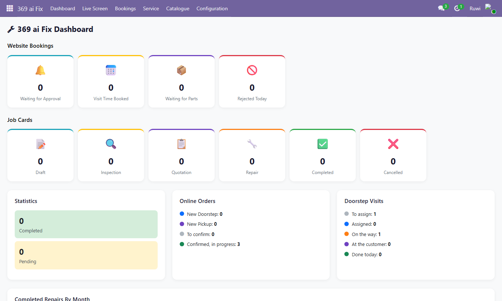
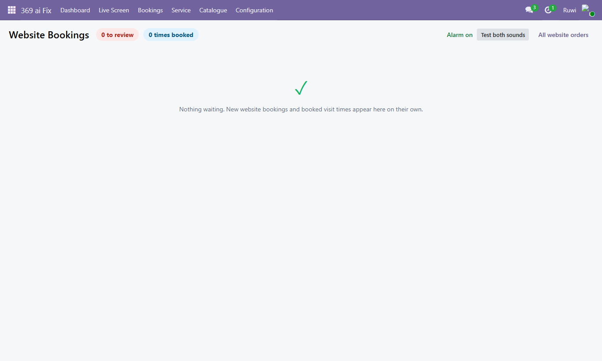
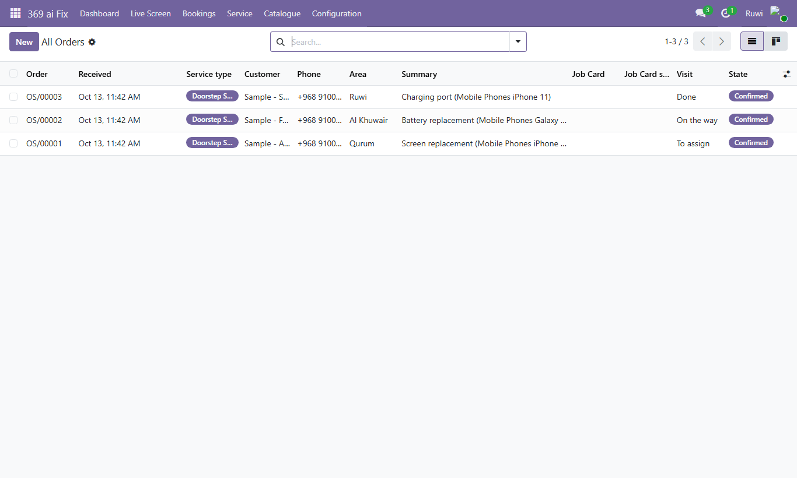
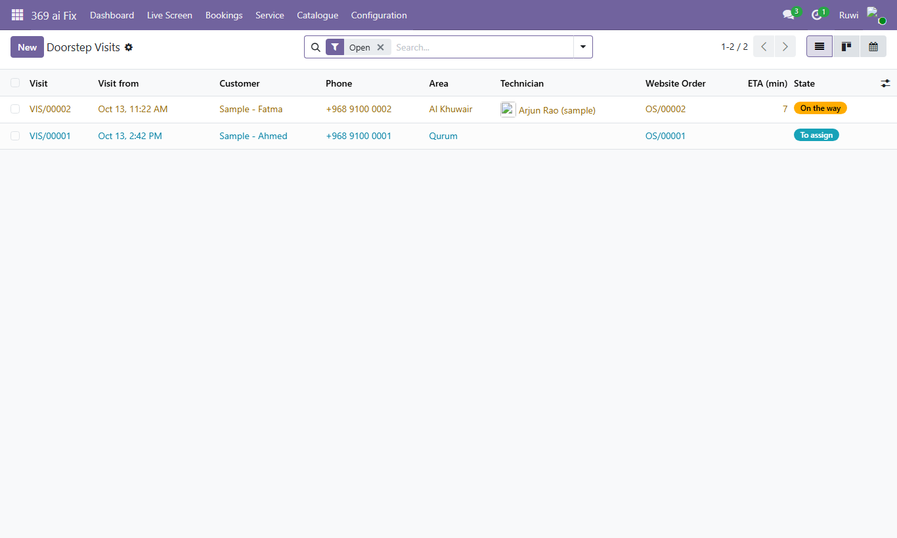
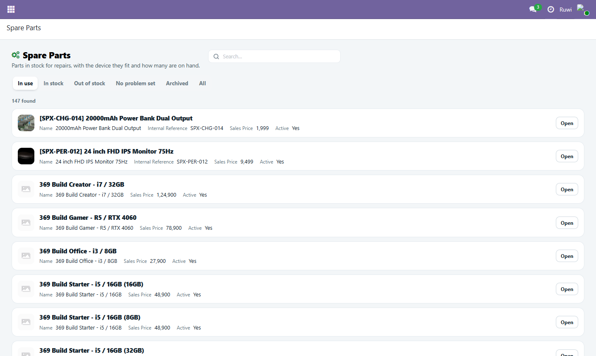
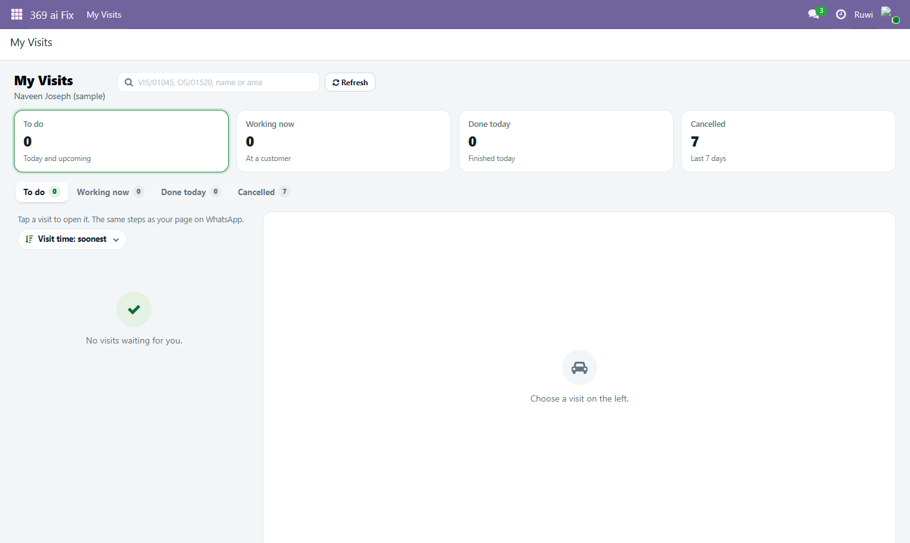

Website bookings, the Live Screen with its alarm, job cards from the website, doorstep visits, the repair catalogue and the settings, together in one home-screen app. The records are still IT & Mobile Repair's and the 369 ai Fix modules'.
Website bookings waiting for staff, website job cards by state, online orders, doorstep visits and completed repairs per month. Every number opens its list.

The booking desk: new bookings and booked visit times appear on their own, and the alarm rings anywhere in Odoo.

Doorstep and pickup orders, waiting for approval, visit time booked, waiting for parts, rejected.

The technician's trip to the customer: assigned, on the way, arrived with the arrival code, working, done.

Every list screen in 369 Mart's look: the search and New sit right after the title, the filters as tabs below, one card per record.

The technician's own screen: search any visit right after the title, today's counts as tiles, the visit opens on the right.
